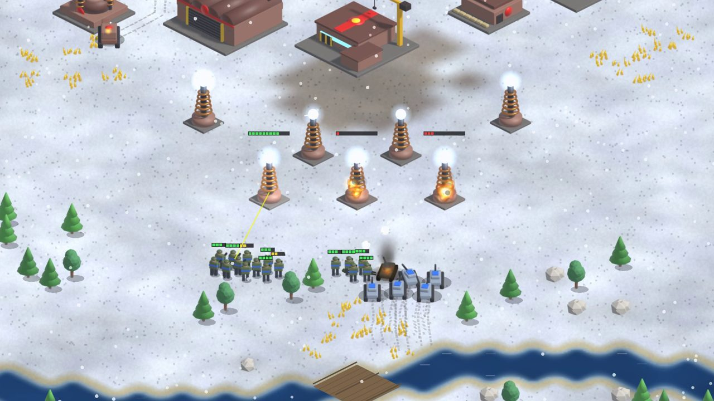
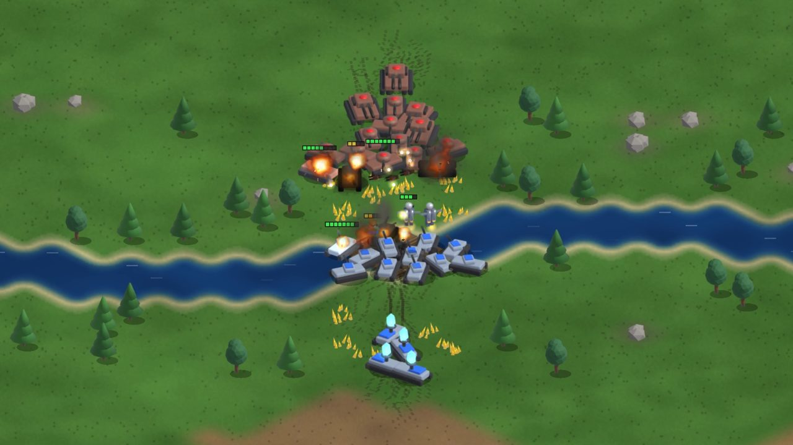
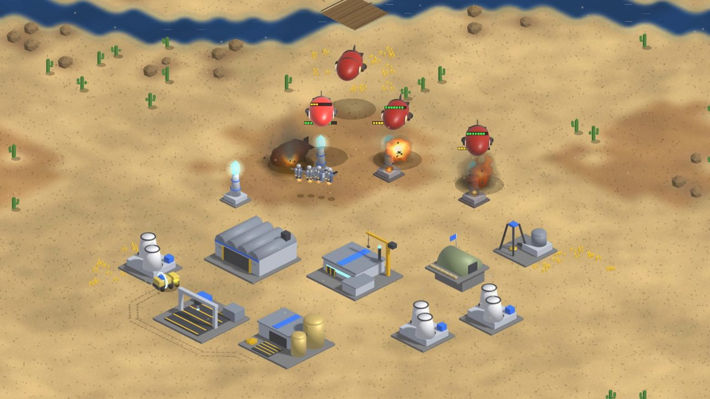
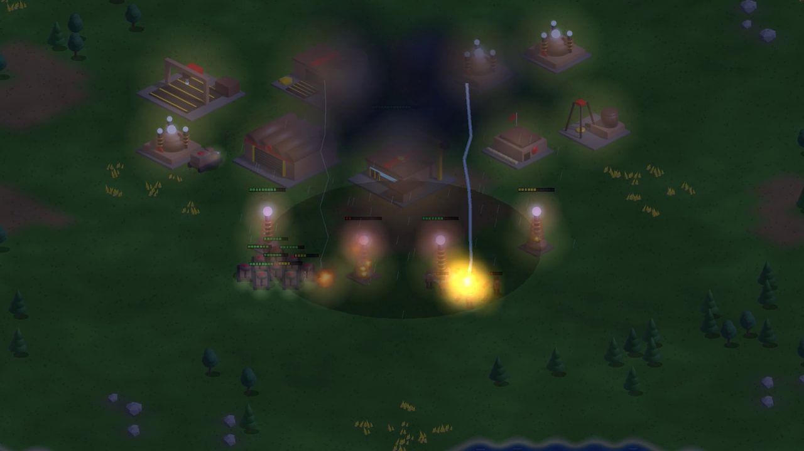
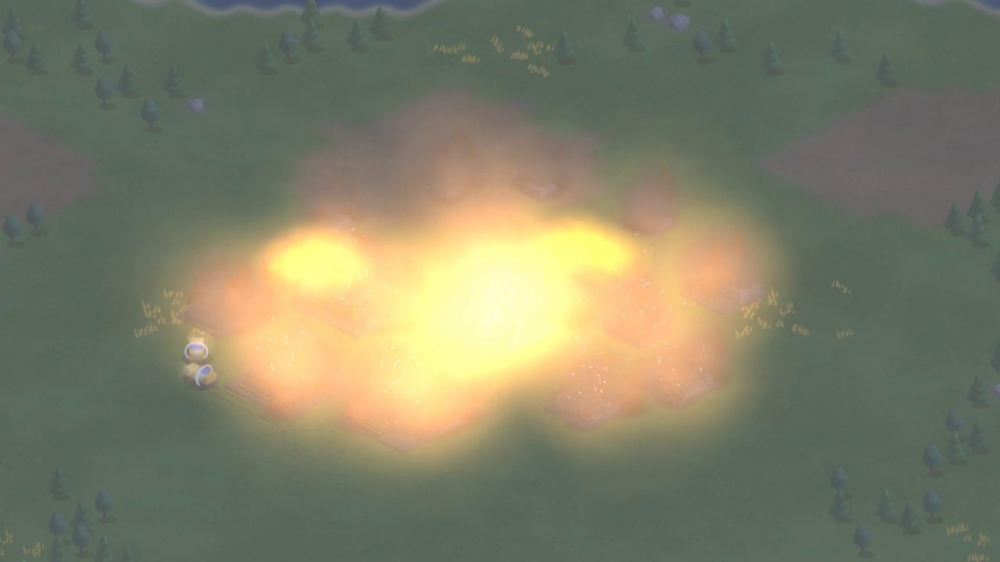
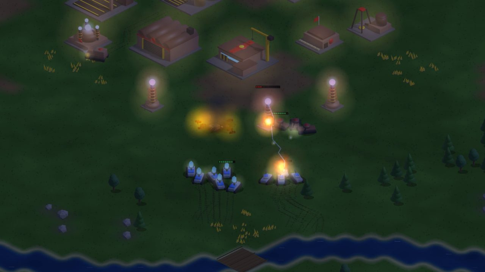
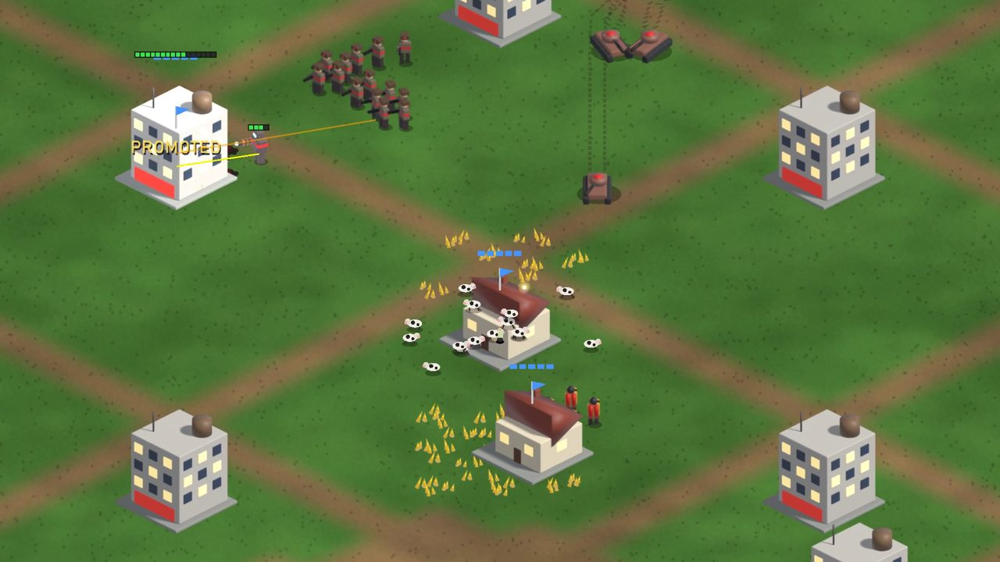
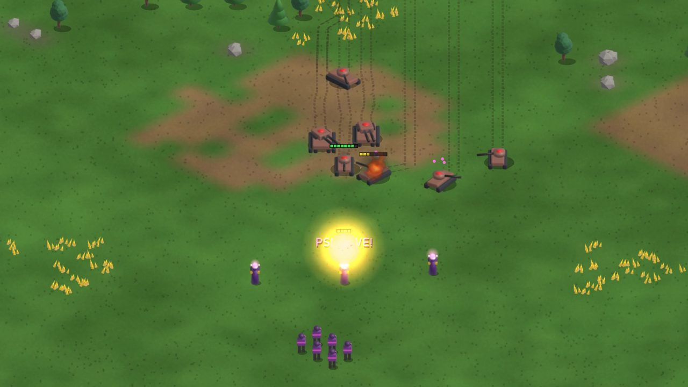
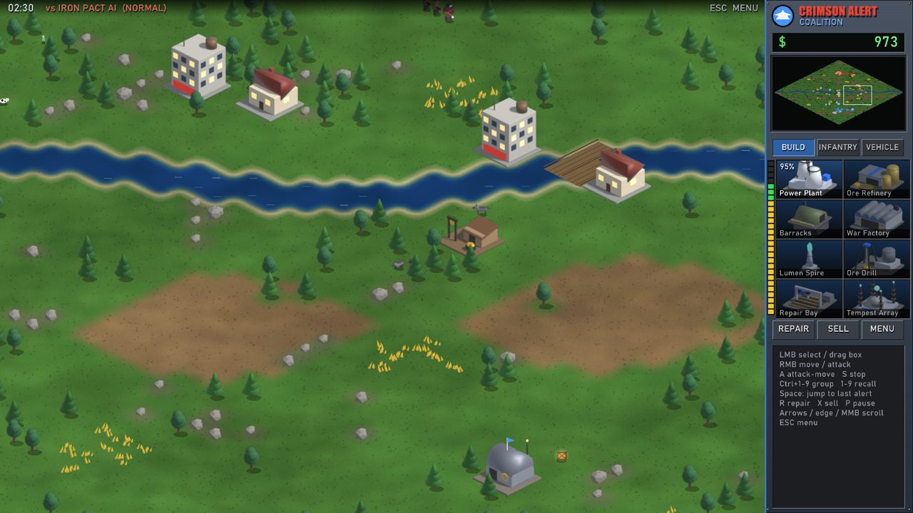

A classic isometric RTS. Three factions, 21 voiced campaign missions, superweapons, mind control, garrisons and an endless survival mode. Build the base, mine the ore, crush the other side.
Crimson Alert plays like the early-2000s strategy games: build a base, send miners to the ore, pump out tanks and infantry from a metal command sidebar, and roll over the other side before they roll over you. Power matters: let it run low and your production slows and your defenses go dark.
The blue Coalition fields Lumen Tanks, Skyjumpers and the Tempest Array. The red Iron Pact brings Ironhide Tanks, Storm Coils, Behemoth airships and the Doom Silo. The pink Purified, led by the defector Puri, mind-control your army, clone their troops and can turn a whole battlefield with the Mind Bloom.
Seven missions for each faction with briefings, radio chatter, portraits and a narrator who never shuts up about new construction options. Hold a bridge for ten minutes, capture a base with engineers, hunt down a sniper hero, race a superweapon. Beat all three campaigns to unlock a secret three-way finale.
Zotix dual-wields pistols and plants demo charges, Brakk snipes and calls in jet strikes, Puri takes control of whatever he looks at. Load infantry into city buildings and fire from the windows. Every superweapon gets a five-minute countdown and a very loud warning.
Pick any faction against any other on six maps: river, snow pass, desert, twin isles, a night raid and a city siege. AI on three difficulties, bonus crates, veterancy chevrons and cows that go moo when you drive over them. Survival mode throws endless waves with a boss every fifth wave and a top-five leaderboard.
Designed and programmed by Arvin Setareh at ZOTIXSOFT in C++ with raylib. Every building and unit is modelled in Blender, and the rock soundtrack is synthesised in code.









Crimson Alert is an isometric real-time strategy game. You build a base, harvest ore for money, train an army and destroy the enemy, playing as one of three factions: the Coalition, the Iron Pact or The Purified.
Crimson Alert is a Windows PC game. It is in development and the release date has not been announced yet.
There are 21 campaign missions, seven for each faction, plus a secret three-way free-for-all finale that unlocks after all three campaigns are beaten. Skirmish and an endless survival mode are also included.
Yes. It is an original game made in the spirit of early-2000s isometric RTS games, with a build sidebar, ore harvesting, power management, superweapons and a cheesy voiced campaign, but its own factions, units and story.
Not yet. Right now it is single-player: the campaigns, skirmish against the AI and survival mode.
Crimson Alert is made by Arvin Setareh at ZOTIXSOFT.